We’ll start by exploring how version control can be used to keep track of what one person did and when. Even if you aren’t collaborating with other people, automated version control is much better than this situation:

We’ve all been in this situation before: it seems unnecessary to have multiple nearly-identical versions of the same document. Some word processors let us deal with this a little better, such as Microsoft Word’s Track Changes, Google Docs’ version history, or LibreOffice’s Recording and Displaying Changes.
Version control systems start with a base version of the document and then record changes you make each step of the way. You can think of it as a recording of your progress: you can rewind to start at the base document and play back each change you made, eventually arriving at your more recent version.

Once you think of changes as separate from the document itself, you can then think about “playing back” different sets of changes on the base document, ultimately resulting in different versions of that document. For example, two users can make independent sets of changes on the same document.

Unless multiple users make changes to the same section of the document - a conflict - you can incorporate two sets of changes into the same base document.

A version control system is a tool that keeps track of these changes for us, effectively creating different versions of our files. It allows us to decide which changes will be made to the next version (each record of these changes is called a commit), and keeps useful metadata about them. The complete history of commits for a particular project and their metadata make up a repository. Repositories can be kept in sync across different computers, facilitating collaboration among different people.
In this lesson you will be using a version control system called Git alongside a cloud-based platform, GitHub. By the end of the lesson you will have:
- Configured Git based on our recommended settings
- Initialised a new repository with Git
- Committed files to the repository which places them under version control
- Developed a change using a feature branch
- Explored the history of your repository
- Reverted changes to files
- Ignored files you do not want to version control
- Created a backup of our repository on GitHub
- Navigated around the GitHub interface
- Merged your feature branch changes through GitHub
Terminology
This workshop may contain language that is new to you. The Glossary section outlines key Git & GitHub terminology for your reference.
Take this opportunity to show the learners where the glossary can be found. Explain the difference between Git & GitHub using the glossary! Or if there is time to spare, the first challenge on this page gets the learners to use the glossary to explain the difference to a partner or write it down in their own words.
Distributed Version Control
Git is an example of a distributed version control system. This means that each collaborator has a copy of the entire repository.

Centralised (FCM)
FCM and SVN are examples of centralised version control systems. Here there is only one repository on a central server.

Challenge
Use the Glossary to describe the difference between Git & GitHub in your own words.
Share your description with other learners if you are comfortable doing so.
Paper Writing
Imagine you drafted an excellent paragraph for a paper you are writing, but later ruin it. How would you retrieve the excellent version of your conclusion? Is it even possible?
Imagine you have 5 co-authors. How would you manage the changes and comments they make to your paper? If you use LibreOffice Writer or Microsoft Word, what happens if you accept changes made using the
Track Changesoption? Do you have a history of those changes?
Solution (Solution).
Recovering the excellent version is only possible if you created a copy of the old version of the paper. The danger of losing good versions often leads to the problematic workflow illustrated in the PhD Comics cartoon at the top of this page.
Collaborative writing with traditional word processors is cumbersome. Either every collaborator has to work on a document sequentially (slowing down the process of writing), or you have to send out a version to all collaborators and manually merge their comments into your document. The ‘track changes’ or ‘record changes’ option can highlight changes for you and simplifies merging, but as soon as you accept changes you will lose their history. You will then no longer know who suggested that change, why it was suggested, or when it was merged into the rest of the document. Even online word processors like Google Docs or Microsoft Office Online do not fully resolve these problems.
Keypoints
- Version control is like an unlimited ‘undo’.
- Version control also allows many people to work in parallel.